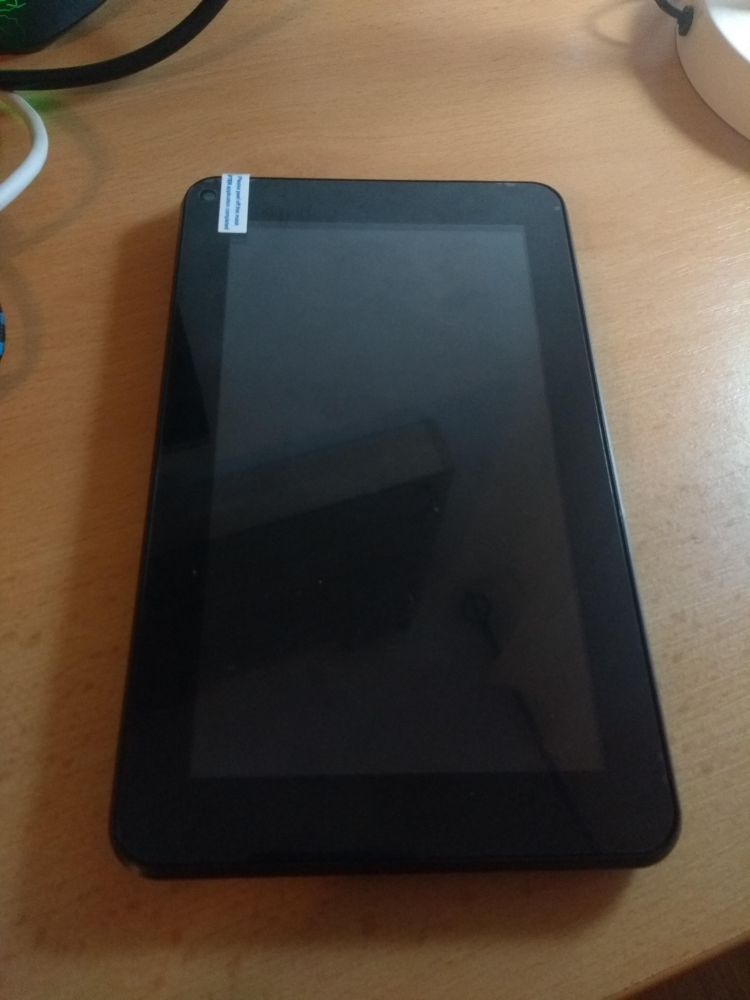

Navon iQ7 2018
Jump to navigation
Jump to search
|
 Front of the device | |
| Manufacturer | Navon |
|---|---|
| Name | iQ7 2018 |
| Codename | navon-iq7-2018 |
| Released | 2018 |
| Category | testing |
| Original software | Android 7.1.1 with kernel 3.10.65 |
| Hardware | |
| Chipset | Allwinner A64 |
| CPU | 4x 1152 MHz Cortex-A53 |
| GPU | Mali-400 MP2 |
| Display | 1024x600 TN |
| Storage | 8 GB |
| Memory | 1 GB |
| Architecture | aarch64 |
{kind=link}
This device is marked as not booting.
| USB Networking | |
|---|---|
| Flashing | |
| Touchscreen | |
| Display | |
| WiFi | |
| FDE | |
| Mainline | |
| Battery | |
| 3D Acceleration | |
| Audio | |
| Bluetooth | |
| Camera | |
| GPS | |
| Mobile data |
Unavailable
|
| SMS |
Unavailable
|
| Calls |
Unavailable
|
| USB OTG / USB-C Role switching | |
| NFC |
Unavailable
|
| Accelerometer | |
|---|---|
| Magnetometer | |
| Ambient Light | |
| Proximity | |
| Hall Effect | |
| Barometer | |
| Power Sensor | |
| Camera Flash | |
|---|---|
| Keyboard | |
| Touchpad | |
| USB-A | |
| HDMI/DP | |
| Ir TX |
Unavailable
|
| Ir RX | |
| Stylus | |
| Haptics | |
| Ethernet | |
| FOSS bootloader | |
Contributors
- martonmiklos
- StandaSK
Users owning this device
How to enter recovery mode
- Hold Volume Up and Power button
- When you see the Navon logo, release the Power button
- Keep holding Volume Up until you get to recovery
Installation
Components
| Component | Model |
|---|---|
| Motherboard | AL-A64-86VH-V1.0 |
| SoC | Allwinner A64 |
| PMU | X-Powers AXP803 |
| Wi-Fi | Realtek RTL8703BS |
| Bluetooth | Realtek RTL8703BS |
| Rear camera | GalaxyCore GC2145 |
| Front camera | GalaxyCore GC0312 |
| Touchscreen controller | Silead GSL1680 |
| Touchscreen digitizer | DR7-M7S-XC XC-PG0700-108B-A1 |
Partition layout
iQ7_2018:/ $ cat /proc/partitions
major minor #blocks name
253 0 262144 zram0
93 0 32768 nanda
93 16 16384 nandb
93 32 32768 nandc
93 48 1572864 nandd
93 64 196608 nande
93 80 16384 nandf
93 96 32768 nandg
93 112 524288 nandh
93 128 16384 nandi
93 144 16384 nandj
93 160 512 nandk
93 176 15872 nandl
93 192 81920 nandm
93 208 16384 nandn
93 224 5046272 nando
254 0 1572864 dm-0
iQ7_2018:/ $ df
Filesystem 1K-blocks Used Available Use% Mounted on
tmpfs 501948 468 501480 1% /dev
tmpfs 501948 0 501948 0% /mnt
tmpfs 501948 0 501948 0% /sensors_cache
/dev/block/dm-0 1523568 1133152 374032 76% /system
/dev/block/by-name/cache 507848 532 496832 1% /cache
/dev/block/by-name/alog 76528 44 74848 1% /logger
/dev/block/by-name/UDISK 4888112 2666192 2205536 55% /data
/dev/block/by-name/bootloader 130798 5956 124842 5% /bootloader
/dev/fuse 4888112 2666192 2205536 55% /storage/emulated
Photos
Navon iQ7 2018 in recovery mode
{kind=link}
See Also
- Navon iQ7 2018 at linux-sunxi.org